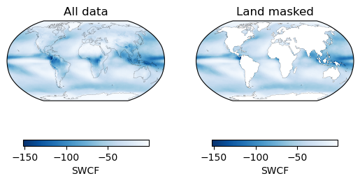

Mask land#
Download data from e.g.: https://www.naturalearthdata.com/http//www.naturalearthdata.com/download/110m/physical/ne_110m_land.zip
unzip it in data_test/
Reading data (CMIP-PPE)#
You have to use the env:ml-notebook to run this example.
import xarray as xr
import numpy as np
import pandas as pd
from pathlib import Path
xr.set_options(display_style='html')
import intake
import cftime
import matplotlib.pyplot as plt
import cartopy.crs as ccrs
import datetime
import seaborn as sns
Open the overview over the parameters in the CAM6 CESM PPE#
cat_url = '/mnt/craas1-ns9989k-geo4992/data/catalogs/cesm-ppe.json'
col = intake.open_esm_datastore(cat_url)
col
cat = col.search(
experiment=['present-day'],
variable = ['SWCF'],
frequency='monthly',
ensemble=1.0,
)
cat.df
cat.df['variable'].unique()
dset_dict = cat.to_dataset_dict()#preprocess = get_ensemble_member,)
ds = dset_dict['present-day.monthly']
--> The keys in the returned dictionary of datasets are constructed as follows:
'experiment.frequency'
100.00% [1/1 00:01<00:00]
Change longitude to -180 to 180#
def convert_ds_lon_to_180(ds):
ds['lon'] = (ds['lon']+ 180) % 360 - 180
ds =ds.sortby('lon')
return ds
ds_360 = ds.copy()
ds = convert_ds_lon_to_180(ds)
Open shapefile#
import geopandas as gpd
import rioxarray
shp = gpd.read_file(
"data_test/ne_110m_land/ne_110m_land.shp",
)
da_for_map = ds['SWCF']
da_for_map.load()
<xarray.DataArray 'SWCF' (ensemble: 1, time: 36, lat: 192, lon: 288)> Size: 8MB
array([[[[-5.5925636 , -5.593125 , -5.5931134 , ..., -5.5908446 ,
-5.59109 , -5.5915 ],
[-5.4282913 , -5.3280287 , -5.272494 , ..., -5.610616 ,
-5.5108867 , -5.46146 ],
[-5.8035173 , -5.795386 , -5.765447 , ..., -5.832269 ,
-5.8782983 , -5.796419 ],
...,
[ 0. , 0. , 0. , ..., 0. ,
0. , 0. ],
[ 0. , 0. , 0. , ..., 0. ,
0. , 0. ],
[ 0. , 0. , 0. , ..., 0. ,
0. , 0. ]],
[[-3.2400467 , -3.240092 , -3.2400918 , ..., -3.2387588 ,
-3.23888 , -3.2395105 ],
[-3.5281255 , -3.5519495 , -3.5952904 , ..., -3.4331818 ,
-3.4734552 , -3.505729 ],
[-3.610597 , -3.631725 , -3.6228158 , ..., -3.6889176 ,
-3.6661172 , -3.6243472 ],
...
[ 0. , 0. , 0. , ..., 0. ,
0. , 0. ],
[ 0. , 0. , 0. , ..., 0. ,
0. , 0. ],
[ 0. , 0. , 0. , ..., 0. ,
0. , 0. ]],
[[-3.752373 , -3.7523866 , -3.7523732 , ..., -3.7514317 ,
-3.7514026 , -3.751728 ],
[-5.572253 , -5.572002 , -5.607301 , ..., -5.5122476 ,
-5.511901 , -5.5242176 ],
[-6.3164225 , -6.292485 , -6.268404 , ..., -6.259397 ,
-6.307243 , -6.3393993 ],
...,
[ 0. , 0. , 0. , ..., 0. ,
0. , 0. ],
[ 0. , 0. , 0. , ..., 0. ,
0. , 0. ],
[ 0. , 0. , 0. , ..., 0. ,
0. , 0. ]]]], dtype=float32)
Coordinates:
* lat (lat) float64 2kB -90.0 -89.06 -88.12 -87.17 ... 88.12 89.06 90.0
* lon (lon) float64 2kB -180.0 -178.8 -177.5 ... 176.2 177.5 178.8
* time (time) object 288B 0001-01-16 12:00:00 ... 0003-12-16 12:00:00
* ensemble (ensemble) float64 8B 1.0
Attributes:
Sampling_Sequence: rad_lwsw
units: W/m2
long_name: Shortwave cloud forcing
cell_methods: time: meandf_shape = gpd.read_file('data_test/ne_110m_land/ne_110m_land.shp')
da_for_map = da_for_map.rio.set_spatial_dims(x_dim="lon", y_dim="lat") # , inplace=True)
da_for_map = da_for_map.rio.write_crs("epsg:4326",)
# df_shape = geopandas.read_file('Data/Ecoregions2017/Ecoregions2017.shp', crs="epsg:4326")
df_shape.head()
| featurecla | scalerank | min_zoom | geometry | |
|---|---|---|---|---|
| 0 | Land | 1 | 1.0 | POLYGON ((-59.57209 -80.04018, -59.86585 -80.5... |
| 1 | Land | 1 | 1.0 | POLYGON ((-159.20818 -79.49706, -161.12760 -79... |
| 2 | Land | 1 | 0.0 | POLYGON ((-45.15476 -78.04707, -43.92083 -78.4... |
| 3 | Land | 1 | 1.0 | POLYGON ((-121.21151 -73.50099, -119.91885 -73... |
| 4 | Land | 1 | 1.0 | POLYGON ((-125.55957 -73.48135, -124.03188 -73... |
from shapely.geometry import mapping
land = df_shape[df_shape['featurecla'] == 'Land']
clipped = da_for_map.rio.clip(land.geometry.apply(mapping), land.crs, drop=False, invert=True)
clipped.mean('time').plot()
<matplotlib.collections.QuadMesh at 0x7fe7553af090>
fig, axs = plt.subplots(1,2, subplot_kw={'projection':ccrs.Robinson()})
ds['SWCF'].mean('time').plot(transform=ccrs.PlateCarree(),
cmap='Blues_r',
ax =axs[0],
cbar_kwargs={
'orientation':'horizontal',
'shrink':.8
},
)
clipped.mean('time').plot(transform=ccrs.PlateCarree(),
cmap='Blues_r',
ax =axs[1],
cbar_kwargs={
'orientation':'horizontal',
'shrink':.8
},
)
axs[0].set_title('All data')
axs[1].set_title('Land masked')
for ax in axs:
ax.coastlines(linewidth=.1)

Alternative using a gridded land sea dataset:#
path='~/shared-craas1-ns9989k-geo4992/data/IMERG_land_sea_mask.nc'
ds_lndmsk = xr.open_dataset(path)
land_mask = xr.where(ds_lndmsk.landseamask > 75., 1., 0.)
land_mask.plot()
<matplotlib.collections.QuadMesh at 0x7fe7405ccbd0>
Interpolate to grid#
# (land_mask is a dataarray with the mask)
aligned_mask = land_mask.interp(lat=ds_360.lat, lon=ds_360.lon, method='nearest')
aligned_mask.plot()
<matplotlib.collections.QuadMesh at 0x7fe740692c10>
import cartopy.crs as ccrs
fig, axs = plt.subplots(1,2, subplot_kw={'projection':ccrs.Robinson()})
ds_360['SWCF'].mean('time').plot(transform=ccrs.PlateCarree(),
cmap='Blues_r',
ax =axs[0],
cbar_kwargs={
#'label':'Wind Speed [m/s]',
'orientation':'horizontal',
'shrink':.8
},
)
ds_360['SWCF'].where(aligned_mask).mean('time').plot(transform=ccrs.PlateCarree(),
cmap='Blues_r',
ax =axs[1],
cbar_kwargs={
'orientation':'horizontal',
'shrink':.8
},
)
axs[0].set_title('All data')
axs[1].set_title('Land masked')
for ax in axs:
ax.coastlines(linewidth=.1)